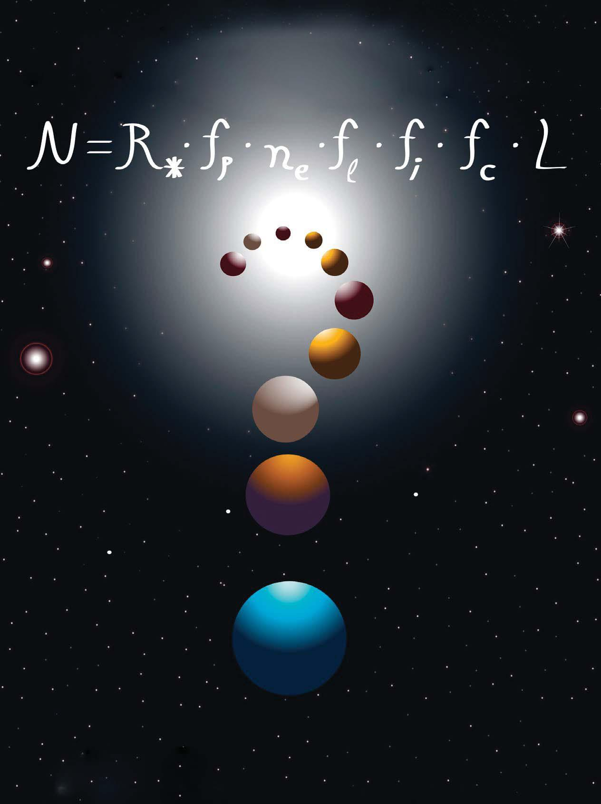

L'Equació de Drake
Frank Drake
La famosa Equació de Drake va ser ideada per l'astrònom i físic Frank Drake l'any 1961.
Mentre treballava a l'Observatori Nacional de Radioastronomia a Green Bank, Virgínia Occidental, Drake, amb el propòsit d'organitzar la primera agenda de discussió científica sobre la recerca de vida extraterrestre en l'Univers, va concebre aquesta equació amb diversos paràmetres.
L'objectiu original d'aquesta equació era organitzar de manera probabilística els diferents components necessaris per a poder estimar la quantitat de civilitzacions tecnològicament avançades i intel·ligents que podrien existir en la Via Làctia. No obstant això, és molt important tener en compte que ni nosaltres ni ningú sap exactament el valor de cada variable de l'Equació de Drake. El nostre único marc de referència és la Terra, la nostra llar, perquè és l'únic lloc on sabem amb total seguretat que hi ha vida, per tant, nosaltres canviem les variables de l'equació usant la Terra com a punt de referència quan realment podrien existir civilitzacions que no necessitin les nostres condicions.

Paràmetres de l'Equació
L'equació estableix:
Quantitat de civilitzacions amb les quals podríem comunicar-nos en la nostra galàxia.
La taxa de formació d'estrelles adequades per a la vida en la Via Làctia.
La fracció d'aquestes estrelles que tenen sistemes planetaris.
El nombre mitjà de planetes per sistema estel·lar que són ecològicament aptes per a la vida (zona d'habitabilitat).
La fracció d'aquests planetes habitables en els quals realment es desenvolupa vida.
La fracció dels planetes amb vida en els quals evoluciona intel·ligència.
La fracció de civilitzacions intel·ligents que desenvolupen tecnologia per a emetre senyals detectables cap a l'espai.
El temps (en anys) durant el qual una civilització així roman activa i emetent senyals.